I'm Handhwarah Abdu Muhumuza, a Data Analytics Engineer & Software Developer with hands-on experience across Python, R, PostgreSQL, React, and Flutter — building full-stack apps and ETL pipelines that turn real-world datasets into practical, working systems.
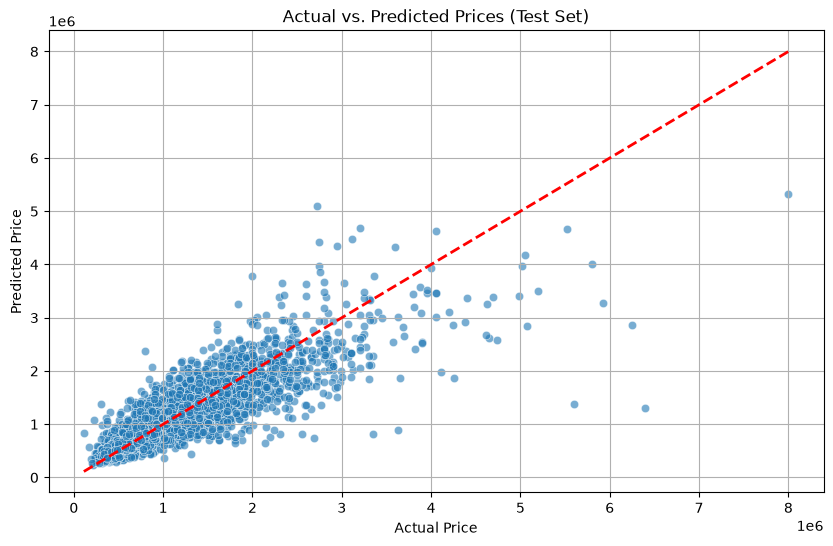
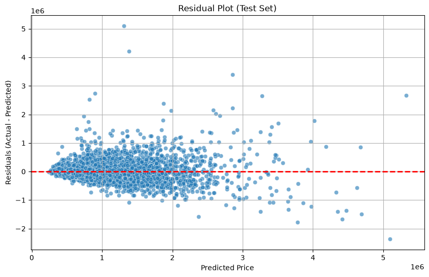
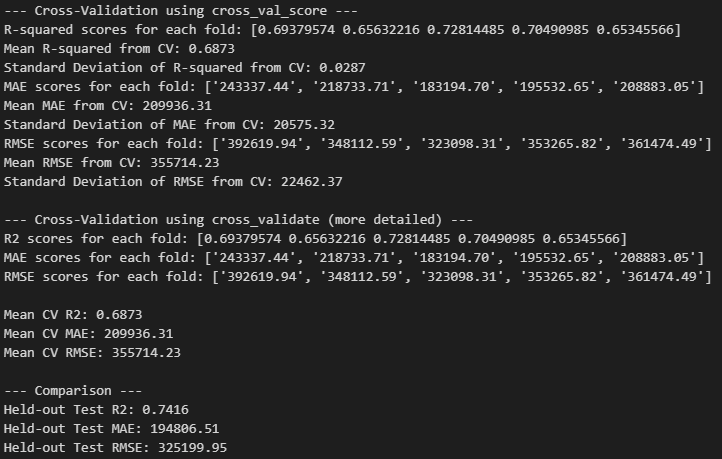
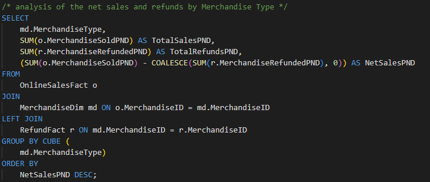
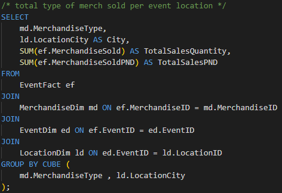
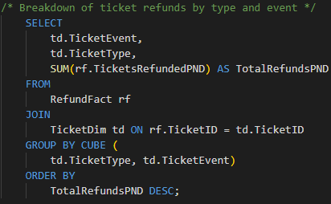
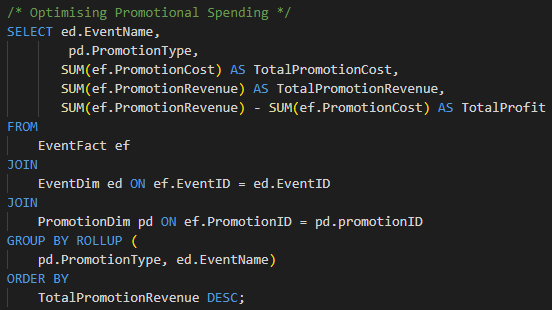
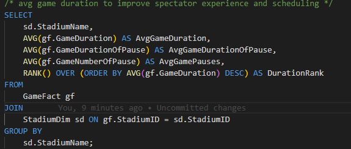
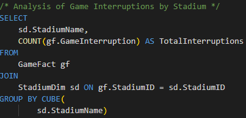
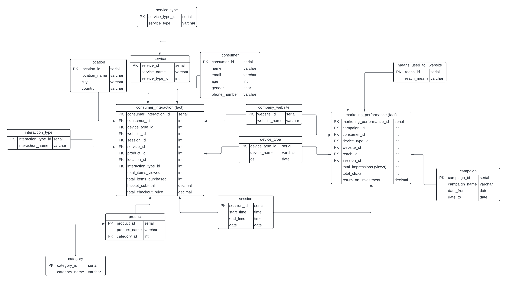
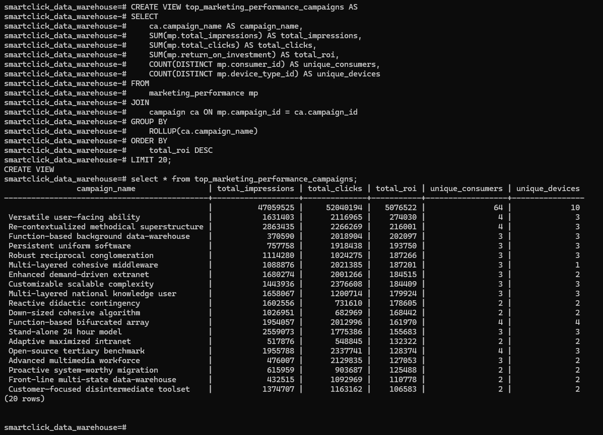
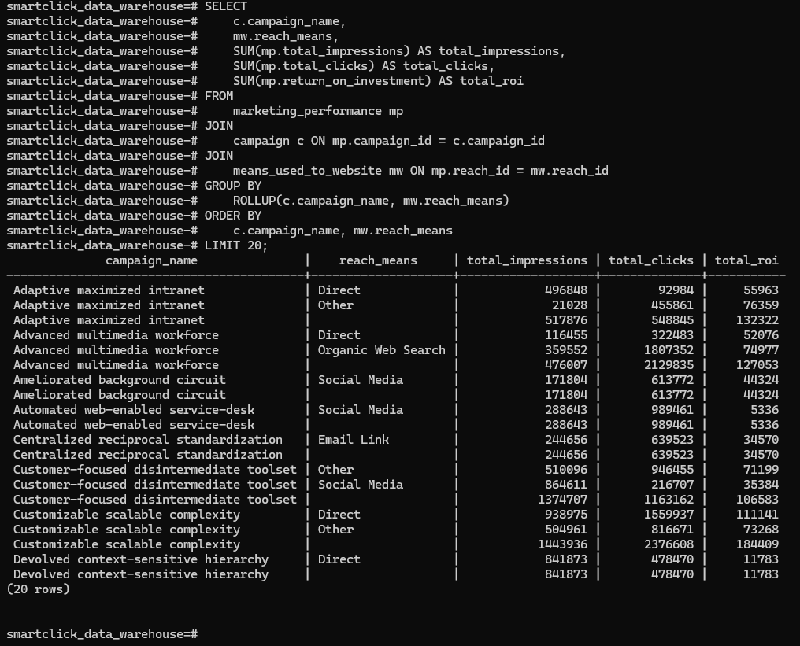
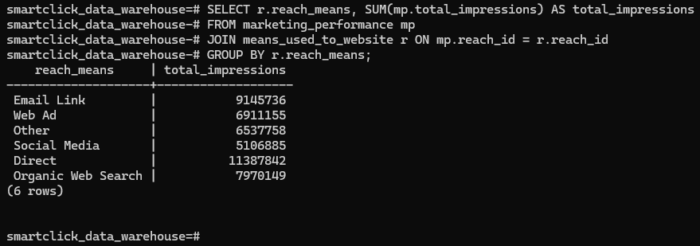
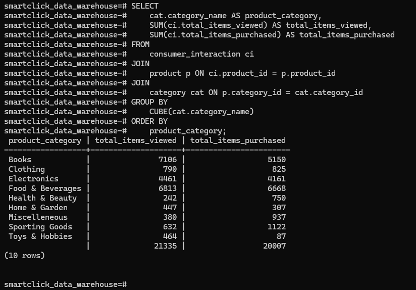
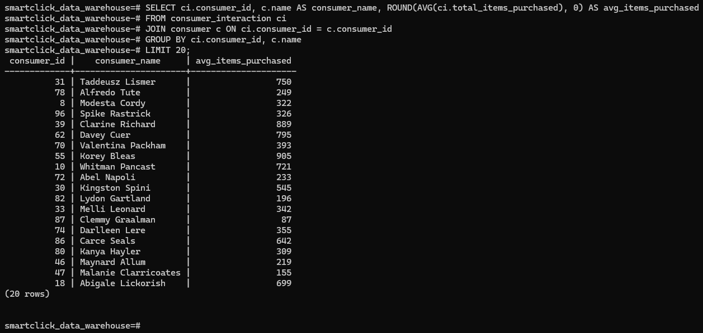
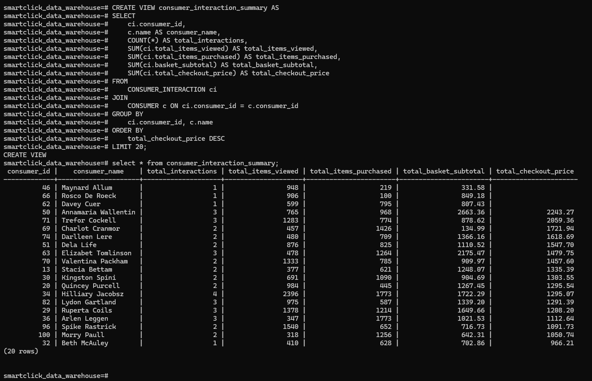
Open to full-time roles, internships, and interesting side projects. Usually replies within a day.